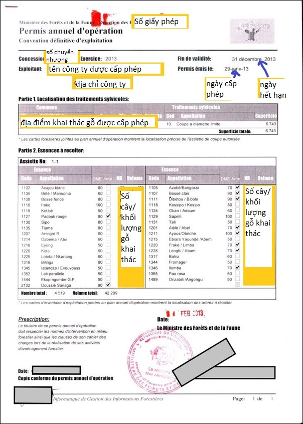
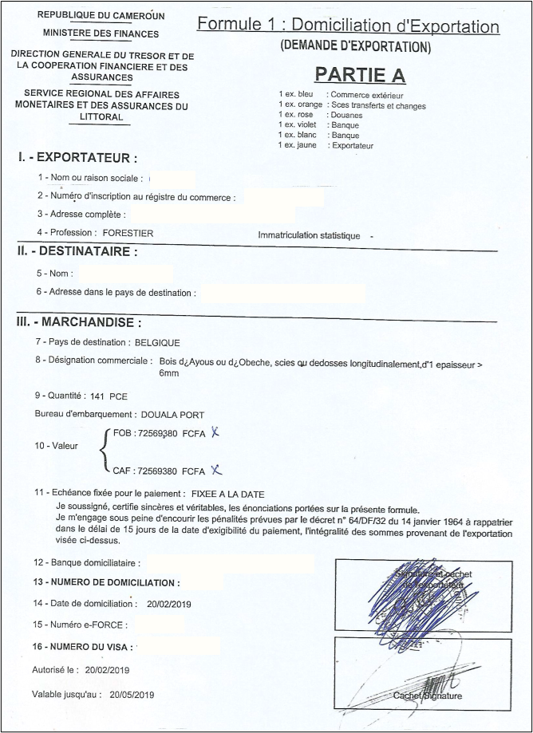
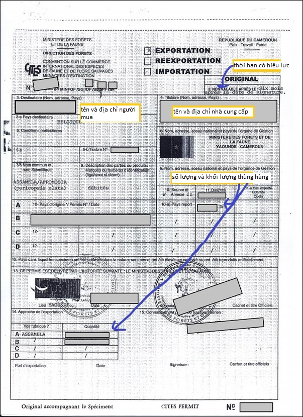
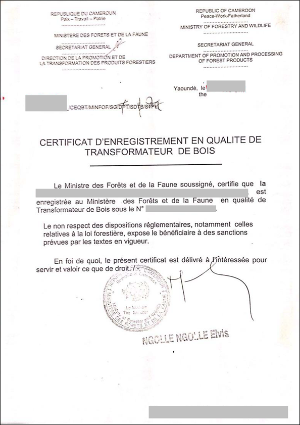

Implementing Timber Leglity Assurance Systems
A guide to comply with timber legality requirements in Cameroon and to support due diligence

CAMEROON
Quy định gỗ hợp pháp của Cameroon
Cameroon đã ký Hiệp định Đối tác Tự nguyện với Liên minh Châu u. Định nghĩa về tính hợp pháp và các công cụ được sử dụng để đảm bảo tính hợp pháp của các tổ chức, cá nhân trong lĩnh vực lâm nghiệp được nêu trong Phụ lục II của Hiệp định. Nó bao gồm tám ma trận về tính hợp pháp là các nguồn gỗ khác nhau từ các khu vực rừng ổn định lâu dài, các khu vực rừng không ổn định lâu dài hoặc các đơn vị chế biến gỗ. Bằng cách nhận thức được các yêu cầu pháp lý ở Cameroon được nêu rõ dưới đây, các cơ quan thực thi pháp luật và các nhà nhập khẩu có thể thực hiện các biện pháp kiểm soát để thúc đẩy gỗ được khai thác, vận chuyển và buôn bán hợp pháp từ Cameroon. Các nhà nhập khẩu và cơ quan xác minh có thể tham khảo hoặc sử dụng thông tin này trong việc thực hiện trách nhiệm giải trình.
Gợi ý xây dựng và thực hiện trách nhiệm giải trình cho các nhà nhập khẩu
Trách nhiệm giải trình là gì?

Phát triển các hệ thống trách nhiệm giải trình
Thực hiện trách nhiệm giải trình
Các tài liệu sau đây được chọn theo định nghĩa gỗ hợp pháp của Cameroon và/ hoặc các quy định pháp luật trong các giai đoạn khác nhau của chuỗi cung ứng.
Công nhận doanh nghiệp chuyên nghề rừng
Tài liệu phải được Thủ tướng Chính phủ hoặc Bộ trưởng Bộ Lâm nghiệp và Động vật hoang dã ký tên, đóng dấu (được Thủ tướng Chính phủ ủy quyền). Ngoài ra, cần kiểm tra tài liệu có số hồ sơ và con dấu chính thức của Tổng thống nước Cộng hòa hay không. (Tên tài liệu gốc: Arrete no. portant agrément à la profession d'exploitant forestier de l'expoitation foresttiere/ Nghị định số phê duyệt nghề khai thác rừng)
Giấy phép khai thác hàng năm
Giấy phép phải có ngày hợp lệ và được ký bởi Bộ trưởng Bộ Lâm nghiệp và Động vật hoang dã. Đồng thời cần kiểm tra các lô hàng có phù hợp với khối lượng và loài gỗ được luật pháp cho phép hay không. (Tên tài liệu gốc: Permis annuel d’opération/ Giấy phép khai thác hàng năm)
Nghị định cấp nhượng quyền rừng (đối với các khu vực do Ban quản lý rừng [FMU] quản lý)

Nghị định phải được Thủ tướng Chính phủ ký và đóng dấu, cần kiểm tra tên của doanh nghiệp được chỉ định trong nghị định có phải là chủ sở hữu nhượng quyền và hợp đồng nhượng quyền hợp lệ phải được đính kèm. (Tên tài liệu gốc: Decret no portant attribution de la concession Forestiere constituée des UFA/ Nghị định liên quan đến việc giao đất nhượng quyền rừng được tạo thành từ các Đơn vị quản lý rừng)
Hợp đồng đối tác
Hợp đồng phải có ngày hợp lệ, đã được ký và đóng dấu bởi đại diện của thành phố, bao gồm thư chấp thuận phải do Bộ Lâm nghiệp và Động vật hoang dã ký và đóng dấu.
Lệnh phê duyệt Kế hoạch Quản lý Rừng
Tài liệu phải được Bộ trưởng Bộ Lâm nghiệp và Động vật hoang dã ký và đóng dấu, và cần kiểm tra gỗ có nguồn gốc từ địa điểm được chỉ định trong lệnh phê duyệt hay không. (Tên tài liệu gốc : Arrete no portant approbation du plan d’aménagement de la concession forestière no constituée de l’UFA/ Nghị định số. phê duyệt kế hoạch quản lý nhượng quyền rừng số do Đơn vị quản lý rừng lập).
Giấy chứng nhận phê duyệt nghiên cứu tác động môi trường (đối với các khu vực do Đơn vị quản lý rừng quản lý)
Cần kiểm tra thời điểm thực hiện nghiên cứu, chứng nhận phải được Bộ trưởng Bộ Môi trường, Bảo vệ Thiên nhiên và Phát triển Bền vững ký và đóng dấu, đồng thời xem xét mọi hoạt động giảm thiểu theo kế hoạch. (Tên tài liệu gốc: Etude d'impact environnemental du projet d'exploitation de l'UFA/ Nghiên cứu tác động môi trường của dự án do Đơn vị quản lý rừng vận hành)
Hồ sơ vi phạm do các bộ trưởng chịu trách nhiệm về lao động, lâm nghiệp và môi trường công bố
Cần kiểm tra xem chủ sở hữu quyền rừng không có trong danh sách các công ty có hành vi vi phạm hay không.
Báo cáo về các dự án xã hội
Các công ty có nghĩa vụ cung cấp báo cáo về việc thực hiện các dự án xã hội.
Biên bản cuộc họp với cộng đồng địa phương
Biên bản các cuộc họp thông tin với cộng đồng địa phương để thảo luận về quyền rừng phải có chữ ký của chính quyền địa phương hoặc Quận trưởng.
Giấy chứng nhận xóa nợ
Giấy chứng nhận xóa nợ phải được xác thực bằng cách nhập số tham chiếu của Giấy chứng nhận đó vào trang web của Tổng cục Thuế (truy cập https://mesure.dgi.cm:8077/ và nhấp vào tab ‘Người tìm ANR’). Nếu chứng chỉ xuất hiện thì nó là xác thực.
Đảm bảo Vận đơn để vận chuyển gỗ tròn và gỗ đã cắt bằng đường bộ
Tài liệu phải được đóng dấu của Bộ Lâm nghiệp và Động vật hoang dã, cần kiểm tra khi nó được cấp và xác nhận rằng nguồn gốc, khối lượng và loài đã khai báo là phù hợp với hàng hóa thực tế. Nếu gỗ tròn và gỗ đã cắt đã được vận chuyển bằng đường sắt, hãy tìm một tờ khai đặc biệt có đóng dấu của người quản lý công ty. (Tên tài liệu gốc: Lettre de voiture pour le transport des bois d'oeuvre (grumes)/ Phiếu gửi vận chuyển gỗ (gỗ tròn))
Giấy chứng nhận xuất xứ
Cần kiểm tra các sản phẩm và khối lượng quy định có phù hợp với lô hàng thực tế hay không và giấy chứng nhận phải được Bộ Lâm nghiệp và Động vật hoang dã ký. (Tên tài liệu gốc: Certificat d’origine/ Chứng nhận xuất xứ)
Quy cách đóng gói để xuất khẩu
Cần kiểm tra thời điểm ban hành quy cách và hàng hóa phải được khai báo phù hợp với hàng hóa xuất khẩu. (Tên tài liệu gốc: Specification des bois debites/ Quy cách gỗ xẻ)
Đăng ký xuất khẩun
Cần kiểm tra tài liệu đã được Bộ Lâm nghiệp và Động vật hoang dã ký và đóng dấu và còn hiệu lực. Đồng thời quy cách của lô hàng và tài liệu phải được nhất quán. (Tên tài liệu gốc: Domiciliation d'exportation (demande d'exportation)/ Điều chỉnh xuất khẩu (Nhu cầu xuất khẩu)
Chứng nhận bốc hàng
Chứng từ phải được cơ quan hải quan ký tên, đóng dấu và còn hiệu lực. (Tên tài liệu gốc: Certificat d'empotage/ Chứng nhận bốc hàng)
Biên lai nộp thuế xuất khẩu
Chứng từ phải có ngày hợp lệ và đã được ký và đóng dấu bởi nhân viên hải quan thu thuế tại địa phương nơi thực hiện thanh toán. Để xác minh tính xác thực của chứng từ, có thể phải đối chiếu số tiền kê khai trên tờ khai hải quan và biên lai nộp thuế hải quan.
Hồ sơ vi phạm do các bộ trưởng phụ trách lao động, lâm nghiệp và môi trường công bố
Cần kiểm tra công ty xuất khẩu không có trong danh sách các công ty có hành vi vi phạm.
Giấy phép CITES
Giấy phép CITES phải do Cơ quan quản lý CITES thuộc Bộ Bộ Lâm nghiệp và Động vật hoang dã cấp cho nhà khai thác gỗ, nhà xuất khẩu gỗ. Cần kiểm tra chữ ký và con dấu, diện tích, loại rừng trên giấy phép khai thác, số lượng và quy cách gỗ khai thác.
Giấy chứng nhận đăng ký
Cần kiểm tra tài liệu còn hiệu lực và đã được Cục trưởng Cục Xúc tiến và Chuyển đổi Lâm sản của Bộ Lâm nghiệp và Động vật hoang dã ký và đóng dấu. Đồng thời các chi tiết có trong chứng nhận phải phù hợp với các hoạt động chế biến. (Tên tài liệu gốc: Certificat d'enregistrement en qualite de transformateur de bois/ Giấy chứng nhận đăng ký là cơ sở chế biến gỗ)
Hồ sơ vi phạm do các bộ trưởng phụ trách lao động, lâm nghiệp và môi trường công bố
Cần kiểm tra công ty chế biến không có trong danh sách các công ty có hành vi vi phạm.
Giấy chứng nhận Phê duyệt Nghiên cứu Tác động Môi trường (đối với cơ sở chế biến)
Cần kiểm tra thời điểm thực hiện nghiên cứu, chứng nhận phải được Bộ trưởng Bộ Môi trường ký và đóng dấu, đồng thời xem xét mọi hoạt động giảm thiểu đã được lên kế hoạch và hoặc đã thực hiện.
Chứng nhận Tuân thủ các Tiêu chuẩn Lao động
Giấy chứng nhận được cấp sau khi thanh tra lao động và cán bộ thu thuế phí kiểm tra các địa điểm khai thác và chế biến.